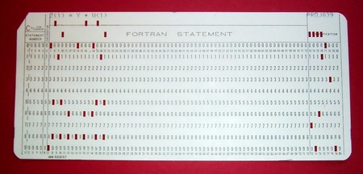

A medida que las computadoras se hacían más potentes, surgió la necesidad de facilitar la interacción con ellas. Las primeras computadoras eran programadas directamente en lenguaje máquina, un sistema de códigos binarios difícil de entender y propenso a errores. Para superar este obstáculo, se comenzaron a desarrollar lenguajes de programación de alto nivel, que permitieran a los programadores escribir instrucciones de manera más comprensible y eficiente.
Trabajo subida de nota
Primeros Lenguajes de Programación (1950–1960)
El pionero de los lenguajes científicos
FORTRAN (FORmula TRANslator)
En 1957, IBM lanzó FORTRAN (FORmula TRANslator), el primer lenguaje de programación de alto nivel ampliamente utilizado. Fue diseñado específicamente para tareas científicas y de ingeniería, permitiendo realizar cálculos matemáticos complejos de manera rápida. FORTRAN se convirtió en una herramienta esencial en la computación científica y fue el lenguaje dominante en este campo durante décadas.
FORTRAN permitía que los científicos escribieran programas con fórmulas matemáticas que eran luego traducidas al lenguaje de máquina por un compilador. Esta abstracción liberó a los usuarios de tener que lidiar con los detalles del hardware.
La respuesta empresarial
COBOL (COmmon Business-Oriented Language)
En 1959, bajo el liderazgo de la pionera Grace Hopper, se desarrolló COBOL (COmmon Business-Oriented Language), un lenguaje orientado a aplicaciones comerciales y administrativas. COBOL fue diseñado para que su sintaxis se asemejara al inglés natural, facilitando la programación a personas con formación no técnica.
COBOL se usó masivamente en bancos, gobiernos y grandes empresas para gestionar nóminas, facturación, contabilidad y bases de datos. Su diseño estructurado y claridad lo mantuvieron en uso durante décadas, y aún hoy existen sistemas críticos escritos en COBOL que siguen funcionando.
Ambos lenguajes, FORTRAN y COBOL, marcaron el inicio de la diversificación del software, orientando los lenguajes hacia distintos sectores (científico vs. empresarial). También demostraron que el software podía adaptarse a distintos tipos de necesidades, allanando el camino hacia una industria de desarrollo mucho más compleja y especializada.
Imágen de FORTRAN

Rellenar huecos
Lee el siguiente párrafo y completa los espacios en blanco con las palabras que faltan.
Obra publicada con Licencia Creative Commons Reconocimiento Compartir igual 4.0